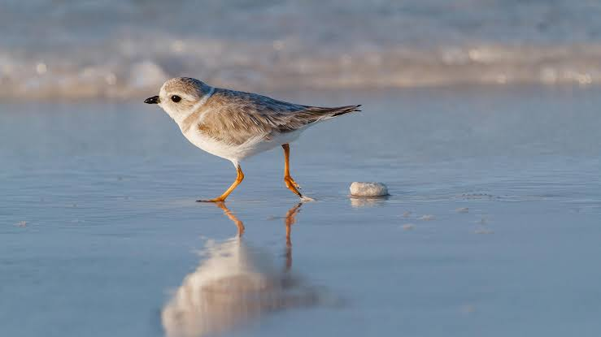

Plover
Birds
Plovers are a widely distributed group of wading birds belonging to the subfamily Charadriinae.
Scientific name: Charadriinae
Phylum: Chordata
Order: Shorebirds
Rank: Subfamily
Mass: Piping plover: 49 g, Common ringed plover: 64 g, MORE Encyclopedia of Life
Length: Killdeer: 23 – 27 cm, Semipalmated plover: 18 cm, Kittlitz's plover: 12 – 14 cm
Plover, any of numerous species of plump-breasted birds of the shorebird family Charadriidae (order Charadriiformes). There are about three dozen species of plovers, 15 to 30 centimetres (6 to 12 inches) long, with long wings, moderately long legs, short necks, and straight bills that are shorter than their heads. Many species are plain brown, gray, or sandy above and whitish below.
The group of so-called ringed plovers (certain Charadrius species) have white foreheads and one or two black bands (“rings”) across the breast.
Some plovers, like the golden (Pluvialis species) and black-bellied (Squatarola squatarola), are finely patterned dark and light above and black below in breeding dress. These two genera are sometimes included in Charadrius.
Many plovers feed by running along beaches and shorelines, snapping up small, aquatic, invertebrate animals for food. Others, like the killdeer (q.v.), of upland meadows and grasslands, are chiefly insectivorous. Plovers and their relatives are quick to give alarm.
When flushed, they take swift and direct flight. Many utter melodious whistled calls, which can be used to distinguish the species. The nest is in a slight hollow in the ground where two to five (usually four) spotted eggs are laid. Both parents incubate and care for the downy young, which run about and accompany their parents soon after hatching.
Plovers are found in most parts of the world. Those nesting in the north are strongly migratory, and they travel and feed in flocks.
Most notable as long-distance migrants are the golden plover of Eurasia (Pluvialis apricaria; see photograph) and the American golden plover (P. dominica), which breed in the Arctic and winter in the Southern Hemisphere.
The American golden plovers of the eastern range fly over the Atlantic and South America as far south as Patagonia, and most return via the Mississippi Valley; those in the western range travel, presumably nonstop, to groups of islands in the South Pacific. See also crab plover.